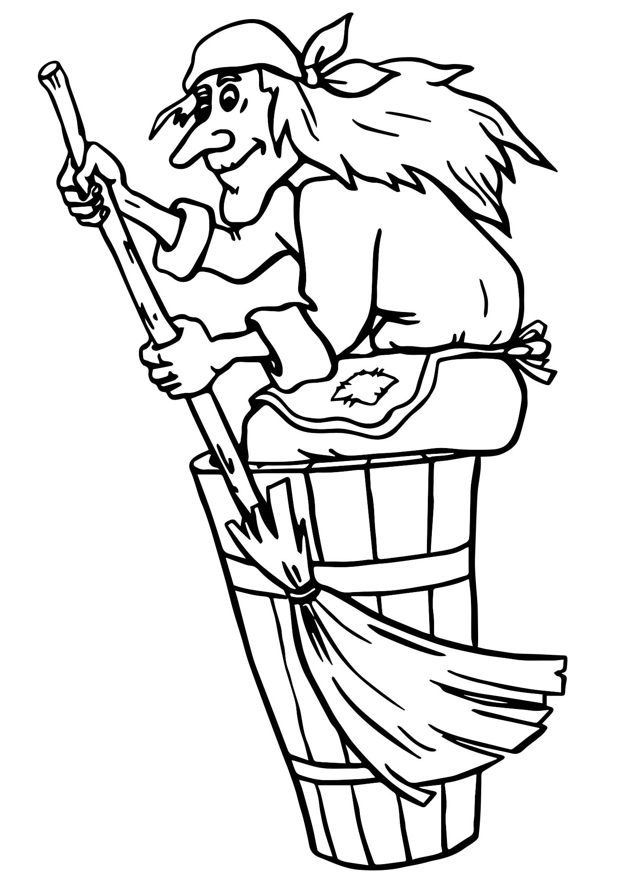
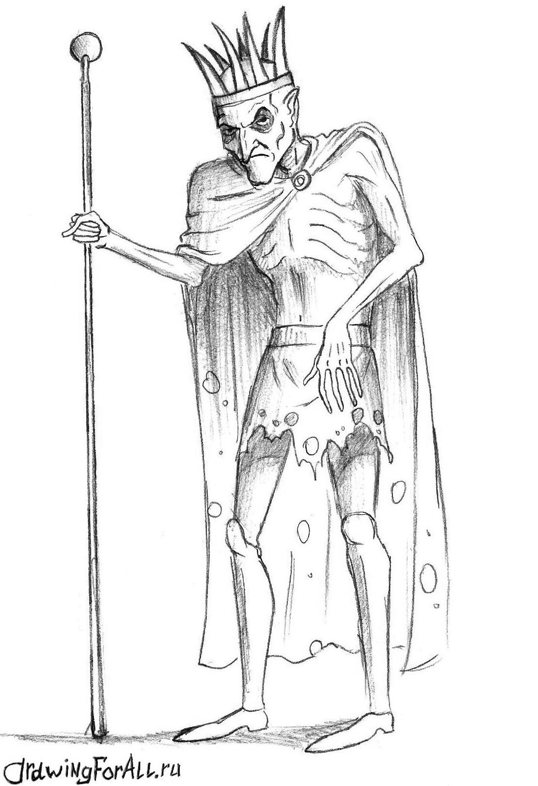
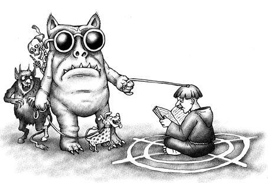

| Образ жизни | Злодей | Сила | Слабость | |
|---|---|---|---|---|
| Имя | Описание | |||
| Дневной |
Баба Яга
 |
Сгорбленная старушка, нос-крючком. | Летает в ступе, может колдовать. | Не очень умна, довольно доверчива. |
|
Кощей Бессметрный
 |
Худой старик, почти скелет, со злыми глазами. На голове корона. | Сильный и коварный колдун. | Смерть в яйце, яйцо в утке, утка в зайце, заяц в сундуке, сундук на могучем дубе на высокой скале. | |
| Ночной |
Вий
 |
Огромное лохматое существо с закрытыми глазами. Говорит басом. Его слушаются ведьмы и упыри. | Своим взглядом обращает в камень. | Сам не может поднять свои веки. |